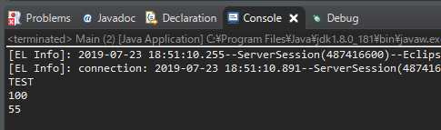
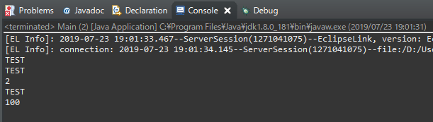
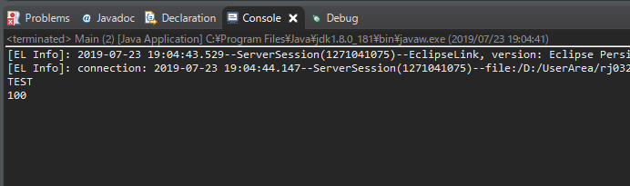
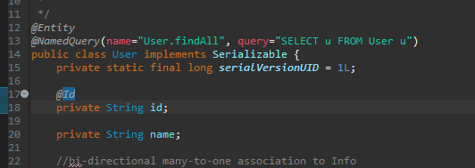
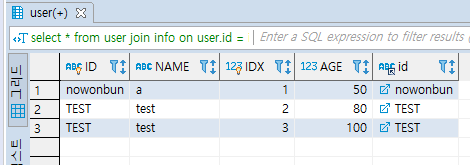
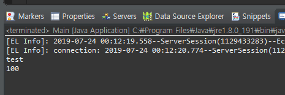
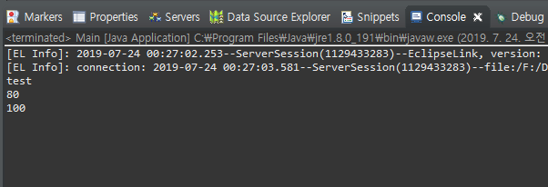
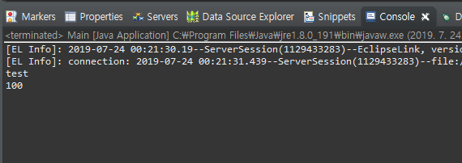

こんにちは。明月です。
JPAでデータを取得する方法に関しては三つがあります。
一つ目は「find」関数を使って持ち来ることです。二つ目は「createQuery」を通って持ち来る方法、「createNativeQuery」の関数で持ち来る方法があります。
「find」関数はクラスタイプを渡して持ち来る単純な方法です。
public static void main(String... args) {
EntityManagerFactory emf = Persistence.createEntityManagerFactory("JpaExample");
EntityManager em = emf.createEntityManager();
User user = em.find(User.class, "TEST");
System.out.println(user.getName());
for (Info info : user.getInfos()) {
System.out.println(info.getAge());
}
}

上の例の方法が一番シンプルですが派生「Info」データが制御できません。例えば「age」データが「80」以上のデータを持ち込みたいなら、検索上でデータを持ち込んでソース上で「if」文で分岐する方法しかないです。
もしかして、「info」データが何万件だと思ったら、多いリソースでパフォーマンスが落ちると思います。
次は「createNativeQuery」で持ち来る方法です。
public class Main {
public static void main(String... args) {
EntityManagerFactory emf = Persistence.createEntityManagerFactory("JpaExample");
EntityManager em = emf.createEntityManager();
Query query = em.createNativeQuery("select * from user join info on user.id = info.id where user.id = 'TEST' and info.age > 80");
Object[] user = (Object[])query.getSingleResult();
for(Object item : user) {
System.out.println(item);
}
}
}

上の方法は「sql」クエリをそのまま入れて検索して持ち来る方法です。実はこの方法を一番推薦しません。率直にこんなに使う方法なら「JPA」を使う意味がありません。検索してもらったデータもEntityマッピングができません。
次は「createQuery」で持ち来る方法です。
public static void main(String... args) {
EntityManagerFactory emf = Persistence.createEntityManagerFactory("JpaExample");
EntityManager em = emf.createEntityManager();
Query query = em.createQuery("SELECT u FROM User u JOIN FETCH u.infos i WHERE i.age >= 100");
List<User> resultList = (List<User>)query.getResultList();
for (User user : resultList) {
System.out.println(user.getName());
for(Info info : user.getInfos()) {
System.out.println(info.getAge());
}
}
}

実は上の方法が「JPA」側では一番理想的です。「Entity」クラスにもちゃんとマッピングできるし、派生データのも「FETCH」で管理でいます。
でも、この方法は一般のSQLではなく、「JPQL(Java Persistence Query Language)」というクエリです。
私もJPQLに関して100%知ってることではないですが、「Select」以外は「SQL」と似てます。
「Select」だけ違いますが、代表的に「join」の方法、テーブル名ではなくエイリアスを使わなければならないことです。
JPQL
1. JPQLはテーブル名ではなくEntity名を使います。

私の場合はテーブル名と「Entity」名(クラス名)と一致していますが、違うなら「Entity」名を使います。
もちろん、Where節とかでテーブルカラム名を使うことがあれば、変わりに変数名を使います。
※大小文字を区分します。
※変数のアトリビュートで「@Entity(name=変数名)」を設定した場合、変数名ではなくアトリビュート名で設定した値で動きます。
2.「Join」する時には「FETCH」を使います。「FETCH」を使わなければ、派生クラスの値が検索条件によって表示されません。

-- この場合はUserクラスのageの値が100以上の場合だけ検索する。 SELECT u FROM User u JOIN FETCH u.infos i WHERE i.age >= 100
-- FETCHを使わない場合です。 SELECT u FROM User u JOIN u.infos i WHERE i.age >= 100
上の場合は「User」の場合は「info」の「age」が「100」以上を持っている「User」データを検索しました。派生「infos」にも「age」が「100」以上の場合だけあります。 でも下の場合は「User」は正しく「info」の「age」が「100」以上を持っている「User」データを検索しました。
でも、派生「infos」の場合は「age」が「100」以上だけではなく、すべてのデータが検索されました。
そしてパラメータバインディングは「:」を使用してパラメータ変数を指定して「setParameter」を利用してパラメータを設定します。
public static void main(String... args) { EntityManagerFactory emf = Persistence.createEntityManagerFactory("JpaExample"); EntityManager em = emf.createEntityManager(); EntityTransaction transaction = em.getTransaction(); // パラメータ変数名は:age設定する。 Query query = em.createQuery("SELECT u FROM User u JOIN FETCH u.infos i WHERE i.age >= :age"); // バインディングは「setParameter」関数で設定する。 query.setParameter("age", 100); List<User> resultList = (List<User>)query.getResultList(); for (User user : resultList) { System.out.println(user.getName()); for(Info info : user.getInfos()) { System.out.println(info.getAge()); } } }
その後で「count」や「max」などの集計関数、「group by」は既存SQLと同じです。
- [Java] Java servletでインスタンスを初期する方法2019/10/17 07:15:48
- [Java] Spring web frameworkで発生する文字化けのEncoding設定2019/10/16 07:32:55
- [Java] Web Spring frameworkでfilter設定2019/10/15 20:12:35
- [Java] Web serviceのweb.xmlでエラーページ設定2019/10/14 20:13:44
- [Java] JPAのDAOをFactoryパターンで管理する方法2019/10/13 22:55:52
- [Java] JPAのSpring frameworkで依存性注入する方法2019/10/13 00:40:08
- [Java] JPAでDAOを生成する方法2019/10/11 07:30:14
- [Java] JPAでトランザクションの使用方法とオブサーバーパターンで共通トランザクション関数を作り方2019/10/10 07:29:43
- [Java] JPAのQuery を作り方2019/10/09 07:34:08
- [Java] JPAのEntityクラス設定(Cascade, fetch)2019/10/08 07:43:33
- [Java] JPAでpersistance.xml設定とentityクラス設定(@GeneratedValue設定)2019/10/07 07:38:13
- [Java] EclipseでJPAフレームワーク設定する方法2019/10/04 19:24:43
- [Java] Web spring frameworkのJSPで使う言語 JSTL - XML2019/10/03 20:02:06
- [Java] Web spring frameworkのJSPで使う言語 JSTL - 関数、データベース2019/10/02 21:00:22
- [Java] Web spring frameworkのJSPで使う言語 JSTL - コアー、フォーマッティング2019/10/01 21:48:08
- [C#] PDFを作成する方法(iTextSharp)2020/05/03 10:22:40
- [C#] シリアライズ(Serialization)をする方法2020/04/30 19:32:04
- [C#] dynamicタイプの動的パラメータ-DynamicObject(WinFormでASP.MVCのViewBagオブジェクトを使用する方法)2020/04/29 22:41:32
- [C#] Stringの補間式(interpolation)2020/04/27 20:39:57
- [C#] Newtonsoft.JSONライブラリを利用してJsonデータ構造を扱う方法2020/04/23 20:19:53
- [C#] EMailを送信する方法(System.Net.Mail)2020/04/22 19:00:42
- [C#] ini環境ファイルを使う方法2020/04/22 00:09:39
- [C#] 環境設定ファイルを扱う方法(System.Configuration)2020/04/20 19:37:57
- [C#] Reflectionを利用してクラス複製する方法2020/04/17 00:34:33
- [C#] XMLをXPathを利用してデータを取得する方法2020/04/16 00:47:17
- [C#] NSoupライブラリを利用してXMLとHTMLをパーシングする方法2020/04/14 19:34:15
- [C#] 日付フォーマット2020/04/09 20:53:20
- [C#] ログライブラリ(log4net)を設定する方法2020/04/08 13:04:22
- [C#] Zipの圧縮ファイルを解凍するコードを作成する方法2020/04/07 11:17:44
- [C#] Zip圧縮コードを作成する方法2020/04/06 14:56:13